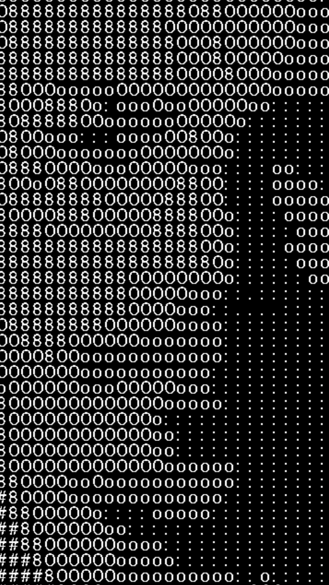
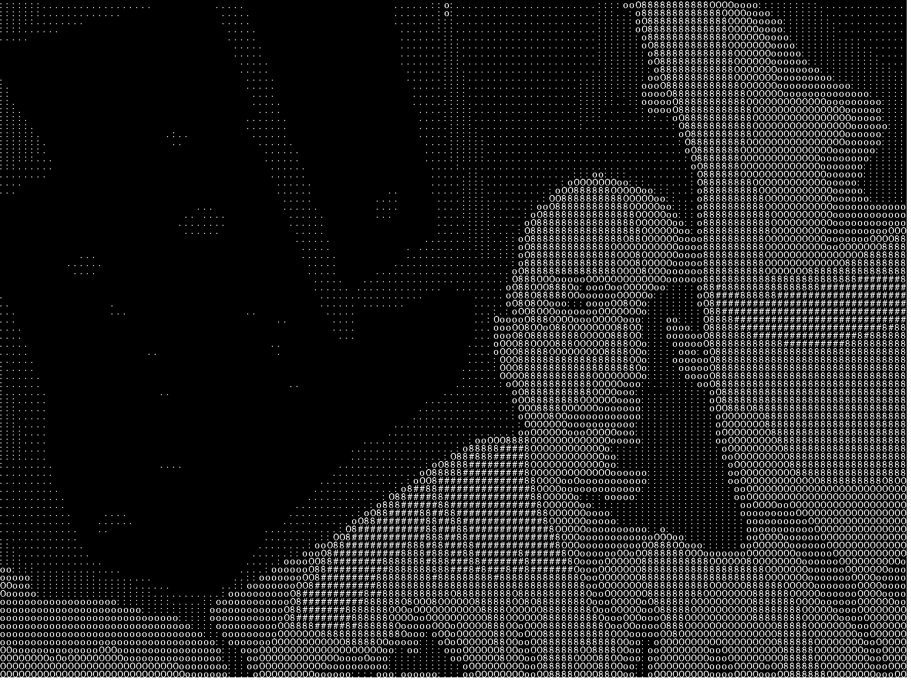
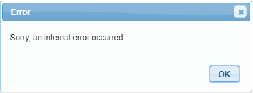
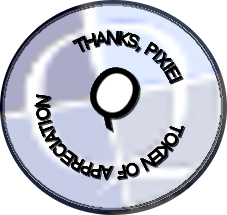

CaveYou have made your way through most of the Wumpus cavern and are nearing in on the most foul creature itself. You recheck your sword: sharp as it ever has been. Your shield, at the ready. Your armor does not have a single gap that would let the creature harm you.
You are startled when a fox jumps up onto a rock in front of you. Quickly, you draw your sword to defend yourself. You chuckle at being startled by an animal. Just as you relax a bit, the fox stands on its hind legs, places a Robin Hood-like hat on his head, draws a two-foot rapier, swishes it around, then takes a fencing pose facing you.
You can see a .
There is an exit to the east.
> x self
You think back to the last reflective surface you came across. Chiseled good looks, a body that would make Mr. Universe envious, and the stanima to out perform even the best horses around, and charm that would best any man around.
> x sword
Your trusty blade.
Forged from the iron the holistic metallurgist extracted from the blood of your enemies.
It has a red glow emanating from it. (That means there's either a Grue nearby... or a WUMPUS!!!)
> x shield
It's your jewel-encrusted (yet somehow lightweight) shield, gifted to you by Tanya.
> x armor
Slicker than owl shit, lighter than air, more powerful than JavaScript...
Your armor suits you.
> eOutside of the Cavern's EntranceYou have made your way to the cavern of the creature. Looking in, you do not see the creature, but you can tell this is its lair. Cautiously, you make your way into the cavern. You carefully step over the skulls and bones of past explorers, swearing not to make the same mistakes they made... whatever they were.
You can go east. > eCavern EntranceYou enter the lair of the most feared Wumpus. Unlike most of the other caverns and tunnels, this one is massive!!!
The cavernous roof towers over 40 feet above you! The far wall is over 100 feet away! There is a very large tunnel that leads off to the More. That must be how the creature makes it's way here. Looking about the cavern itself, you do not find the Wumpus, but the floor is uneven, but even at that, it could not hide from you. You make your way down towards the center of the cavern to the large brown grass covered hill. You carefully make your way around the hill keeping an eye out for where the creature could be. Without warning, the hill moves! It starts to get bigger!
More. > mWumpus CavernThe hill keeps getting bigger, and then the large head appears! It is tall, but narrow, and, as it cocks it's head to one side, you see one eye, which is at least four feet across! It looks at you, and, with a beeping-sounding roar, it rises up to its full height so that its long, bunny-rabbit ears scrape across the roof.
It roars again with its beeping sound and rushes down at you!!!
As it nears in on you with more beeping sonic attacks, it opens it's cavernous mawl and...
Beeping.
> b
Your Bedroom
You sit upright in your bed, breathing hard and clutching your chest! Your covers are scattered around your bed, and your pillow is on your dresser on the other side of the room.
You finally settle down and push the button on your alarm clock, at which point, the beeping stops.
You get up, get dressed and notice a piece of paper on the floor, which you pick up and read...
"Quest Towers, 3rd floor, 12:00 noon."
You flip the note over again looking for any other clues. Finding none, you wad up the note and throw it in the trashcan. "2 points!" you yell... then you remember the party last night. The group you work with said they almost had the project finished, but they needed your final run through -- your input on a couple of problems they were having. (They figured your input would solve the problems.)
Looking at your clock, you realize you only have about 30 minutes to get there on time. So, you grab your inventory items, you rush out the door, grab a passing taxi, and arrive at the Quest Towers with 10 minutes to spare.
Pixie's Quest (KV's Hack)
by The Quest Forum
HubSo, this is the hub, the nerve center of something that seems very important...
There are several people wandering around here, working on different things.
(Sometimes together, sometimes alone.)
There is a strange, seemingly out of place doorway to the east, which casts an orange light on the floor just this side of it. There is a green field of grass with a desk, which is in the shade of an umbrella and sitting so that it is framed by the doorway. Someone wearing a dark cloak, which covers most of his features, is frantically working at the desk, moving papers around, and sometimes losing one to the ground below. Standing beside him is what looks like a short person covered in fur and wearing a leather skirt.
In the southwest corner, by the water cooler, there are two people drinking and talking. When they notice that you are watching them, they excuse themselves and return to work.
You can see , , a , , the , and .
You can go to the strange doorway.
appears out of nowhere, stashes a strange pouch into his pocket, and gets to work on the .
> x group project
XanMag moves in front of the screen just before you can see what these guys are really working on.
> x xanXanMag is a pretty normal fellow upon inspection. His shirt is old and adorned with two Bells - apparently a beer logo - and his jeans are old and snug around his frumpy waist. He is bouncing between activities as you would expect an over-caffeinated teenager with A.D.D. would despite the fact that he is not over-caffeinated, not a teenager, and has never been diagnosed as having attention deficit disorder. Currently he appears to be daydreaming.Visit XanMag's profile page. > look at NEW ALERT: Welcome, Pix!
Pix,
Welcome to the game!
You can enter: GAMENAME title to change the title to whatever you please.
Be sure to USE the Quest PX! (As if you didn't know THAT already!)
Oh, and you may need this before the game is over:
JS.eval ("$('#status').css('top', '0%')")
R.H.
> gamename title
title
by The Quest Forum
Hub
There are several people wandering around here, working on different things.
(Sometimes together, sometimes alone.)
There is a strange, seemingly out of place doorway to the east, which casts an orange light on the floor just this side of it. There is a green field of grass with a desk, which is in the shade of an umbrella and sitting so that it is framed by the doorway. Someone wearing a dark cloak, which covers most of his features, is frantically working at the desk, moving papers around, and sometimes losing one to the ground below. Standing beside him is what looks like a short person covered in fur and wearing a leather skirt.
You can see , , a , , the , , and .
You can go to the strange doorway. > look at post about JSThis post has been automatically added to your Bookmarks.
(USE YOUR QUEST DEVICE TO VIEW YOUR BOOKMARKS.)Displaying online content...
View this post in your browser.
> get brochure
You pick it up.
> x it
WELCOME TO YOUR 'THANK YOU' GAME!
Hello, Pixie!
On behalf of everyone who has ever played or created a Quest game, THANK YOU!
As a little reward for all of your efforts, a few of us have gotten together and concocted what is now on your screen.
Each of us has hidden an object somewhere.
Can you find them all?
> look at Richard Headkid's desk
"Sorry, Pix," says RH before you can get a good look. "That's top secret stuff, right there!"
> go to strange doorway
As you get ready to go through the doorway, you notice a on the wall.
> look at keypad
Just like a standard phone , it has 10 numbers and the "#" and "*" keys.
You notice a hanging below the keypad.
> look at card
The card is blank on this side, but it looks like there is writting on the other side. You turn the card over and read... "Out of Order" on the card... Oh well...
> take card
You take the card and hang it around your neck and walk around for a moment. You notice everyone is watching you and you start to feel just a bit more daft than you normally would, so you remove the sign from around your neck and hang it back on the keypad. (Maybe after a few drinks, you might try the sign again.)
[ YOUR SCORE HAS JUST INCREASED BY 1 ]
> go to strange doorwayYou step through the doorway and feel like you just stepped onto a descending elevator . You stumble a few steps before catching your balance, but you still fee light headed.[ Quest complete: Visit Dark Lizerd's world ]DL's RoomYou are in a large field covered by an off-green grass, and a pale orange sun hangs in the cloudless sky over head. Before you is a desk with scattered all around. There is an shading the desk.
Behind the desk is a person working hard on some sort of problem. You watch as he picks up one paper, looks at another, then scribbles a note on both before setting them to the side. You watch as one of the papers slides off the edge of the desk and floats softly to the ground. You watch as the grabs a paper from the ground and hands it to the person behind the desk, who shakes his head and points to another one.
In the corners of the room are casting dark shadows underneath. Every now and then, you think you see something move!
You can see , a , a , an and .
You can go west, north, east or south.
> look at papers
The scattered papers have all sorts of writing and scribbles, with boxes and arrows pointing to other boxes with circles pointing to other shapes... For a moment you almost understood what you are looking at... Almost.
> take papers
You reach for the paper, but a long green arm snatches it first. "Thanks, I was looking for that one," he says.
> look at umbrella
You look at the umbrella and notice the entertaining red and white stripes that start in the center and extend all the way to the edges. There are also some red and gold tassels that hang from around the edges, along with several, foot-long flaps that gently sway in the breeze. Oddly, looking around, you don't notice any other effects of a breeze, nor do you feel one.
> take umbrella
You try to take the umbrella, but it is firmly attached to the ground... Dark Lizerd watches you for a moment as you struggle with it. "Are you done messing with that?" he asks in a rather flat tone. He then moves it to put its shadow back to where he had it in the first place.
> look at creature
You look over the rather short, tan fur covered, cat-like creature. She is wearing a simple leather skirt with wide straps that go over her shoulders. There is another leather piece connecting the straps that covers her chest. You notice her watching you intently, and it kinda makes you nervous, but you are not sure why. Maybe it is the way her tail slowly swings from side to side. You almost expect her to jump you at any moment.
> speak to creature
When you try to talk to her, she blinks as she slowly shakes her head, 'no.'
> take creature
You reach for her, but she hisses and backs up, placing the desk between you and her. "That was a warning, maybe after she knows you better you could do that," DL says. "Otherwise, she could be very affectionate."
> look at DarkLizerd
You see a person wearing a dark grey or black cowl that hides most of his features. For some strange reason, you are not totally comfortable around him. You almost get the feeling he is not quite human.
> take DarkLizerd
You pick him up and hold him for a moment but feel silly, so you set him back down. "Was it fun for you?" he asks. You notice the creature giggle as she watches what you did.
[ YOUR SCORE HAS INCREASED BY 1 ]
> project DarkLizerd
"I'm helping with a secret project for a friend as a way of saying 'thank you'. ...but it's a secret so you can't tell anyone, OK?"
> papers DarkLizerd
"I'm trying to translate Basic to Quest, so that I can submit all the Basic projects I've been working on and a few more that I can translate. But the problem is that 'print' is now 'msg', and 'select case' is now 'switch' and 'switch' is also for turning things on and off, and 'input' is now 'GetInput' but there is no variable to collect the answer from, and Quest can convert Arabic to Roman, but only the numbers, and Spaces(5) will print 5 spaces, (or will it'msg' 5 spaces?) and there are objects that can be objects, or not objects, then there is no way to save data to a text file, but there is a way to read that file, but you cannot tell Quest how you want to read it, then you gotta figure out what you read which is hidden in some variable that is pre-programmed into Quest..."
(5 minutes later, although it felt like hours)... you back away.
> clones DarkLizerd
You ask if there is any way you could help with the work he is working on, to which he replies, "I tried to create a clone of me to help with this work, but it did not turn out so well and I had to lock it away."
From one of the dark trees you hear a voice call out, "I am not the clone you stupid lizard! I am!"
"NO YOU ARE NOT!!!" DL yells back. "Would a clone know what happened before he was cloned???!!! I think not! Therefore I am the original and not YOU!"
From another tree, you hear, "IDIOT!!! When you were cloned from ME, you learned everything I knew, INCLUDING WHAT HAPPENED BEFORE!!!"
The one at the desk yells back, "Yea??? What about this scar across my forehead! Why would that get cloned?"
(You suspect there is nothing to be gained by listening to any more of this.)
> story DarkLizerd
"The ancient Bastet had a history that covered over a million years," DL explains, "and they had a lifespan of 3000 years, but a disaster crashed their society and, after the fall, their lifespan is only about 50 years. I am still trying to sort out all the details, but, from what I can tell, they were a very peaceful race that never knew wars, crimes or any of that."
> creature DarkLizerd
"So, what is this creature you have here?" you ask.
Dark Lizerd looks up at you, then at the creature. "She is a Bast, or rather, a Child of Bastet. From some research on ancient Earth and ancient Egypt, I discovered that they visited there and taught your people agriculture among other things. Well, the Bastet did, but her people's story is rather a bit sad."
> look at desk
The desk is made out of a dark wood, oak perhaps. On top are several piles of with strange writings and scribbles everywhere. Over to one side, sitting on a stack of papers, is a floating, spinning of a planet you don't recognize. He watches you for a moment before speaking. "That is a globe of my home world, where we are now. If you like it, take it, I got more around here."
[ YOUR SCORE HAS INCREASED BY 1 ]
> look at globe
It is a floating, spinning globe of a planet you don't recognize. There are strange land masses with large and small, blue oceans with green tint.
> take globe
You reach for the globe, but your hand passes right through it. Although you could not get it, it felt like your hand passed through a bubble of water, but your hand is still dry!
"Here," he says and reaches out and touches a that you didn't notice under the globe, and the planet disappears.
> look at disk
It is a disk, about the same size as a hockey puck. In fact, you would have thought it was one except for the small raised bump on one face.
> take planet disk
You pick it up.
[ Quest complete: Find the Planet Disk ]
> press button
[ YOUR SCORE HAS INCREASED BY 1 ]
The planet re-appears, and starts to rotate slowly.
> press button
The planet disappears from view.
> north
You start to wander to the north to see just how far the field extends when you suddenly run smack into a clear wall. (You hear a snickering behind you.) You examine the wall but discover that the view beyond is not painted on the wall, but is instead beyond it.
> east
You start to wander to the east to see just how far the field extends when you suddenly run smack into a clear wall. (You hear a snickering behind you.) You examine the wall but discover that the view beyond is not painted on the wall, but is instead beyond it.
> south
You start to wander to the south to see just how far the field extends when you suddenly run smack into a clear wall. (You hear a snickering behind you.) You examine the wall but discover that the view beyond is not painted on the wall, but is instead beyond it.
> westYou stumble out through the door and almost fall down. You feel like a heavy weight is pressing down on you. (strange!)HubSo, this is the hub, the nerve center of something that seems very important...
There are several people wandering around here, working on different things.
(Sometimes together, sometimes alone.)
In the southwest corner, by the water cooler, there are two people drinking and talking. When they notice that you are watching them, they excuse themselves and return to work.
is wandering around here looking like he is hiding from someone. Funny that you did not notice him before. 'He must be really good at hiding in plain sight!' you say to yourself.
You can see , , a , a , , , the , and .
You can go to the strange doorway.
"Hey, Pixie!" booms . "What'cha got there?
"Is that a ?!?!
"Can I see it? Please???"
> give to rh planet disk
[ Quest complete: Let a friend check out that planet disk. ]
As soon as you hand the disk over to RH, he produces a Strange Pouch, reaches one hand into it, and disappears!
(You now have access to his .)
> look at Dark Lizerd
He looks just like the one in the other room... You suspect something strange is going on here because you still see him working at the desk. Staying at his side is another creature, much like the one from the other room, but with a dark tan fur.
> other one Dark Lizerd
You ask Dark Lizerd about the 'other' one on the other room. Oh, that... Well you see, I was having problems translating Basic into Quest so I created a clone of myself to do half of the work, but things didn't go as planned. The clone thought he was me and tried to lock me up when I tried to explain it to him. I managed to escape so now I'm hiding out, out here... By the way, is he making progress?
[ YOUR SCORE HAS INCREASED BY 1 ]
> clones Dark Lizerd
So, how many does he have working there now?
> helpQuick Help
- Objects: Try LOOK AT..., SPEAK TO..., TAKE..., DROP..., OPEN..., GIVE... TO..., USE... ON/WITH...
- Inventory: See which items you are carrying by typing I, INV or INVENTORY.
- Moving around: Press the compass buttons, or type GO NORTH, SOUTH, E, GO TO...
- Shortcuts: Press the up arrow and down arrow to scroll through commands you have already typed in. Try X... as a shortcut for LOOK AT...
You can enter REAL HELP for more game-specific information.
You can also visit the wiki.
> real helpThis game was designed specifically for The Pixie, so there are MANY commands that are normally not included in a Quest game.
COMMANDS (*require Scrolls)
| Command | Pattern(s) | Description |
|---|
| ls | ls;dir | Prints a list of files accessible from 'the local drive'. |
| cat FILENAME | cat #text#;print #text# | Prints the contents of a file on 'the local drive'. |
| dance | dance | You will get down. |
| travel* | travel;t | You will be transported to the hub. (NOTE: This only works while in Crate Mart.) |
| clear | clear;clr;cls | Clears the screen. |
| showme* | showme | Prints all child items of the current location. |
| showme it* | showme #text# | Displays information about a specific object |
| showme all* | showme all | Prints a list of all game objects. |
| msg | msg (#text#) | Prints a message OR an attribute. |
| JS... | JS.#text# | If you don't know what this can do, don't fool with it! |
| CloneObject* | cloneobject (#text#) | Clones an object.
(NOTE: This does not MOVE the object!) |
| destroy* | destroy (#text#) | Destroys an object. |
| gamename | gamename #text# | Changes the game's name (takes immediate effect) |
| CHEAT* | ^cheat (?move|set|get) (?.+)$ | Pixie knows what this does. (It's his command, after all!) |
There is also a QUEST device in the player's inventory.(Just enter USE QUEST DEVICE to access the available options.)
IF YOU GET STUCK...Enter HINT or ask for help on the forum.
> x desk
It contains a and a .
> look at strange PNG

> take strange PNG
You pick it up.
> use strange PNG
You attempt to use the strange PNG as a towel, but, just before you suck on one corner, you realize there are no nutrients in the corner of the PNG...
...maybe you should just drop it...
> drop strange PNG
You drop it.

Now that you look at the picture from here, you can see it for what it is! It's RH!
(He's an ASCII character!)
[ YOUR SCORE HAS INCREASED BY 1 ]
> look at group project
Dark Lizerd moves in front of the screen just before you can sneek a peek.
> look at PC
> switch on PC
> gamename Pixie Kicks Ass
Pixie Kicks Ass
by The Quest Forum
Hub
There are several people wandering around here, working on different things.
(Sometimes together, sometimes alone.)
is wandering around here looking like he is hiding from someone. Funny that you did not notice him before. 'He must be really good at hiding in plain sight!' you say to yourself.
You can see , , a , a , , , the , (on which there is a ) and a .
You can go to the strange doorway.[ Your score has increased by 1. ]
> x any key
You see nothing special about the ANY key.
> press itYou have initiated blue_Telemat-booth.js...
Reality flickers around you for a brief moment.
Once you regain your focus, you see a message on the screen.
Hi there, Pixie!
You should use cat filename.txt or print filename.txt to view some files! (The newest one on the drive right now is README.txt.)
(You should probably peruse blue_Telemat-booth.txt as well...)
I hope you like the game so far!
Best of luck!
Richard Headkid
[ Your score has increased by 10 ] > x boothIt's just a perfectly normal TeleMat boothTeleMat booths offer instant travel around the world; just step inside, dial the number of your destination, and you will be instantly teleported there.
> enter boothA blue Telemat boothYou can see a , a , a and a .
You can go out.
> x note
How many leaves were in the pile in Zork.
(DIAL THE ANSWER.)
> turn it
You turn the sticky note over.
There's a number scribbled on the back:69105
> dial 69105A blue Telemat boothYou can see a , a and a .
You can go out.[ YOUR SCORE HAS INCREASED BY 5 ] > look at ALERT: Welcome to KV's world!
Pix,
Great job! You used the phone booth! (It's not quite up to snuff, but it got you here, right?)
Oh, by the way: When you travel in the phone booth, you can't really tell your location changes (or even where you're at) until you go out and look!
> out[ Quest complete: Visit KV's gateway. ]The Land of ConfusionThis is a small room, consisting of nothing more than a desk.You can see , , a , a and a .
You can go north. > look at KVK.V. waves at you.
"Hi, Pixie!
"I think I just saw the textual representation of my imaginary self run through here!
"I hope not, because that guy is TROUBLE!"
Visit KV's profile page. > speak to KV"I think I just saw my Nomme de Guerre head north from here," says KV. "The bastard's probably up to no good..."
You ask KV about Richard Headkid.
"He just came through here," says KV. "He was headed north."
> speak to KV
"Try asking me stuff," says KV. "I'm set up with a menu of choices to pick from."
You ask KV about the game.
"Do you like it so far?" KV asks.
"What did you think of DL's room? Wasn't the clone bit hilarious?!?"
> speak to kv
"Try asking me stuff," says KV. "I'm set up with a menu of choices to pick from."
You ask KV about the phone booth.
"More people should read sticky-notes," KV mumbles, completely ignoring your question.
> speak to KV
"Try asking me stuff," says KV. "I'm set up with a menu of choices to pick from."
You ask KV about the planet disk.
"Is that what RH was carrying when he came through here?" KV scratches his head. "I mean, I don't know what a planet disk is... but he had some sort of round thingy..."
> speak to KV
"Try asking me stuff," says KV. "I'm set up with a menu of choices to pick from."
You ask KV about The Forum Posts.
"We could use your help with all the posts on the forum," says KV. "Those things are all over the place!
"We tried, too! You should have seen us! It was so sad...
"Someone asked how to use CapFirst in the text processor, and I didn't know... So I told them just to write this long ass script... and that just confused them more.
"Then, HK popped in and laid out a masterful script, which was similar to mine, but better in every way... BUT that didn't help, because then they asked what the forward slashes were for, and HK, it was so funny... he posted: //This is a note.... and then THEY were all like, "I know that! But what are the slashes for?"
KV shakes his head and laughs. "And that's when DL and XM chimed in. Not at the same time, mind you... about two minutes apart. And they both posted two entirely different scripts, and..."
KV continues to ramble on incessantly while you wonder what you'll have for supper once you've finished playing your game.
Time passes...
> speak to KV
"Try asking me stuff," says KV. "I'm set up with a menu of choices to pick from."
You ask KV about JavaScript.
K.V. smiles.
"Do you like being able to use the JavaScript? I thought that would be pretty neat: A coder having to code within the game to pull certain things off!"
> speak to KV
"Try asking me stuff," says KV. "I'm set up with a menu of choices to pick from."
You ask KV about clones.
"I could set it up so you can clone objects, you know," says K.V. "You'd just need to fix the code. It's a little messed up at the moment, but you can use the SHOWME Spell to view what's currently written. From there, you can use your CHEAT SET command to fix it. Can't you? (Or have you found all that stuff yet?)"
> speak to KV
"Try asking me stuff," says KV. "I'm set up with a menu of choices to pick from."
You ask KV about XanMag.
"You need to record a dope beat for him," says KV.
> speak to KV
"Try asking me stuff," says KV. "I'm set up with a menu of choices to pick from."
You ask KV about DarkLizerd.
"DL is a very talented... individual," replies KV, a confused look on his face.
> x desk
It contains a , a and a .
> get all
projector: You can't take it.
canvas screen: You can't take it.
> get scroll
You pick it up and copy the spells to your magic book. The scroll inexplicably vanishes.
> turn on tv then turn on tandy
You switch it on.
You switch it on.
> n
Meadow
This is a peaceful place, covered in lush, green grass.
You can see a .
> ride birdAs soon as you mount the ostrapode, she takes off like a bat out of hell!
You wrap your arms around her neck and hold on for dear life as she darts up a nearby hill.
Just before you reach the top, her pace slows a little, and you start to relax a little. Then, the ostrapode does something that takes you completely off guard:
She leaps up into the air!The sky
As the ostrapode glides effortlessy through the air, you look to the east and spot Richard Headkid riding a flying carpet just before he disappears from view.
> 3
I didn't understand your command.
Suddenly, she seems to realize that she's defying the laws of gravity, and the ostrapode panics and begins to fling herself around, causing you to lose your grip from around her neck.
As you plummet towards impending doom, you wonder: 'Why, exactly, are these guys working on this shit instead of the REAL group project?'
Just then, reality flickers around you again.
You are still barrelling down through the sky, but you notice that you are no longer accompanied by the ostrapode. You swing your arms and legs in unison to spin yourself around, and you see a Land Rover just above you.
You immediately wish you'd just stayed back in the hub and never gave The Dickhead Kid that damned disk in the first place.
Just as you realize how much of a waste that particular wish was, you decide it best to wish for one more thing, but the point quickly becomes moot as you and the Land Rover smash into a rocky promontory.
Darkness
You can't see anything, smell anything, hear anything, or taste anything.
> feelYou feel around in the dark.
After a moment or two, just after abandoning any hopes of finding anything, something far off in the distance catches your eye.
It looks like a faraway flicker of light...
You strain to get a better look, but it is what it is: a faraway flicker.
Just as you begin to contemplate entering UNDO, you notice that the light is slowly growing nearer.
After just a few moments, a man with a lamp appears.
"You've proven your worth just by making it this far," he says, and, now that he's close enough, you can see that it's none other than ALEX WARREN!
"Don't let this darkness slow you down," says Alex.
He flashes a grin and passes you the . "You may as well take this," he says. "It's a little buggy, and it switches itself off at random sometimes, but, besides that, it's a good lamp."
You take the , giving Alex a slight nod, and, with that, he says, "cheers!" and moves on to other things.
You wish Alex the best (as do we all), then you get back to the task at hand. Now that you have a light source (which, of course, just switched itself off), you're bound to use it!
> use lamp
You switch it on.
A soft glow emanates from the lamp, then slowly grows brighter, revealing your surroundings. As you glance to and fro in an attempt to acclimate, the lamp begins to hum.
The humming is driving you insane! Growing louder and louder by the second, until, finally...

Your surroundings, however, remain not game.pov.parent.dark
'Huh,' you think to yourself (as if you'd think anything to anyone else), 'I hope I wasn't going to need that for anything else!'
The Imaginarium
You can see a , a , and .
RH is standing here, looking slightly confused.
"Hi, Pix," he says, his eyes on his feet. "My hidden item is in the hub. And so is the disk. I put it in the pouch, and everything that goes into that thing goes directly to the hub for some reason."
A sits just a few feet away from you, watching your every move.
> get all
Strange Pouch: You pick it up.
glitch: You try to pick it up, but you lack focus.
The God Device: You pick it up.
> x glitch
> get it
You reach for the glitch, but it knocks the status bar down and disappears!
[ YOUR SCORE HAS INCREASED BY 10 ]
> hint
Click on the QUEST PX in the Inventory Pane, then select USE. The first alert will tell you how to fix the 'glitch'. (Copy and paste it.)
You can also clear the screen (enter CLEAR).
THIS MESSAGE WILL SELF-DESTRUCT.
> use Quest PX
>view alerts
> kv_welcome_alert
Pix,
Welcome to the game!
You can enter: GAMENAME title to change the title to whatever you please.
Be sure to USE the Quest PX! (As if you didn't know THAT already!)
Oh, and you may need this before the game is over:
JS.eval ("$('#status').css('top', '0%')")
R.H.
> JS.eval ("$('#status').css('top', '0%')")
eval ("$('#status').css('top', '0%')")
eval ("$('#status').css('top', '0%')")
> hint
Displaying hints for: The God Device
> hint
Displaying hints for: a Strange Pouch
Hint 1: Try entering: SEARCH POUCH
> search pouchYou reach into the pouch and find yourself in:Hub
There are several people wandering around here, working on different things.
(Sometimes together, sometimes alone.)
is wandering around here looking like he is hiding from someone. Funny that you did not notice him before. 'He must be really good at hiding in plain sight!' you say to yourself.
You can see , , a , a , , , the , a , , , (on which there is a and a ) and a .
You can go to the strange doorway.
"Pixie!" KV walks up and hands you a token.
"That's just a small token of my appreciation, sir!
"I don't know why I made you go through all that just to get it...
"(I think it may have been XanMag's fault...)"
[ YOUR SCORE HAS INCREASED BY 10 ][ Quest complete: Search the Strange Pouch. ][ YOUR SCORE HAS INCREASED BY 10 ]
> look at ALERT: KV's world completed!
Pix,
Great job!
You've completed all of my parts!
...except for finding the shard I've hidden...
I'll send you a link to a forum post with a hidden hint.
(See you in the sequel!)
KV
> use tandy then scoreYou use a little bit of what you've learned from Dark Lizerd, hacking away at the keys in BASIC.
10 PRINT "Hello, World!"
20 END
After a few thousand keystrokes (mere childsplay!), you've got a program up and running.
"Hello, World!"
[ YOUR SCORE HAS INCREASED BY 1 ]Your score: 53/69105?True Maximum Score: [ 227 ]- Took DL's card: 1 point
- Picked up DL: 1 point
- Examined DL's desk: 1 point
- Pressed the planet disk's button: 1 point
- Asked DL about the 'other' DL: 1 point
- Dropped the strange PNG: 1 point
- Changed the game's name to Pixie Kicks Ass: 1 point
- Pressed the ANY key: 10 points
- Dialed 69105 to travel to KV's gateway: 5 points
- Tried to take the glitch: 10 points
- Completed KV's gateway: 10 points
- Searched the strange pouch: 10 points
- Used the Tandy: 1 point
> use brochure
You fan yourself with the brochure.
[ YOUR SCORE HAS INCREASED BY 1 ]
> ask xan about music
XanMag seems startled by your voice and looks at you in surprise.
"You... you're... you're actually a real person?" Xan cocks his head and looks at you a little closer. "Pix? Is that you? It has to be you. You look like a Pixie." You nod affirmatively and wonder if that was meant to be an insult.
"Never expected to actually talk ot you face to face. You are exactly as I imagined you being." Again... you are unsure if that's a compliment, indifference, or an insult. The smile on XanMag's face though tells you that he meant no harm by his foot-in-mouth approach to conversation.
"Oh," Xan pauses, "Totally forgot what you asked me." With that, he returns to his tasks.
> ask xan about music
"I love my music," XM responds. "I've been known to make my own actually. I've been having some trouble finding that new sound, however."
He looks at you with renewed wonder and continues, "I'm not sure if you have any experience, but if you run across a cool beat, use this to record it and let me have a listen!" With that, he returns to other things.
> ask xan about anything
"Well, that certainly is an interesting concept. It's almost as interesting as nothing. Can you imagine nothing? Nothing is the absence of anything. Anything is everything including light and space. You see, a long, long time ago... like 13.5 billion years ago, there was nothing. Not even space. Could you imagine? Seems bizarre, right? Well, get this," he continues, becoming more and more animated... "Suddenly there was something," he gestures, hands flying wildly. "Something from... from what?!? What was that what, Pixie?" He asks, flailing his arms around at... well, at whatever he is seeing in his mind's eye. "I'll tell you of the what," Xan continues, "there are these things, called the Higgs-Boson. I have one right here..." Xan digs into his pocket and rummages around a bit.
"Wait. Look here!" He pulls his hands violently from his pocket and presents a closed but open palm. Your attention is drawn to a little brown tablet that inadvertently was ejected from Xan's pocket and has skittered across the floor. Xan continues, "You SEE it, Pix? Do you?"
You shake your head no. "Bingo! Neither do I! It has been avoiding me for years and years. WE know it exists but we haven't been able to isolate it to study it. Just imagine," he continues, still gesturing wildly. "With this," as he references his empty palm, "We might just be able to explain it ALL!! There might just be an explanation to the beginning and the end."
Xan trails off and looks around the room as if trying to spot an elusive shadow in a darkened room. "Beginning. End. What was I saying again?" Xan's attention has been redirected to other things.
[Your score has increased by 4!]
> get pill
Okay. Taken.
> give pill to xan
You offer the pill to XanMag.
He takes it from you and without pausing long enough to wink, tosses it in his mouth and washes it down with a beer.
A few moments later Xan settles down and gets your attention.
"Listen, you've been great all these years, Pix. Go over to that hi-tech interface over there," he says, making direct and prolonged eye contact with you, "and log in. My password is 'frittata'. Once you log-in, there will be a little something that pops-up that I need help with. As always, thanks a ton!"
A couple minutes pass and XanMag becomes distracted again.
[Your score has increased by 2!]
> use interface
You start by pressing any key.
A single line pops-up:
PLEASE ENTER PASSWORD NOW:
You type 'frittata' with the keyboard and the letters pop up on the small monitor. You press enter and wait.
[Your score has increased by 4!]
Nothing changes on the screen, but you hear a strange zaawhaaaap. A sound you image would come from tossing a vulture into a giant bug zapper.
Hmmm...
Nothing else.
> enter portalAs you approach the black hole, you the dumbness wash over you...
The last thing you recall is a faint sucking sound...Beat LaboratoryThe sound in here is deafening. The ceiling is one giant speaker and is vibrating everything in the room. It is definitely hard to hear in here. So loud, in fact, that you can't even hear yourself think. There is one particularly interesting bank of doo-hickeys here, in front of which is a beat up chair.
You can see a , , a , and a .
You can go northwest.
> use drive on slot
You plug the flash drive into the rectangular slot. It fits nicely.
> get headphones
You snatch up the headphones.
> wear headphones
You put it on.
You put the headphones on and all the noise in the room is canceled out! Cool!
> push button
You push the button and the light begins to blink.
> play drums
You pick up the drumsticks and snap them on the digital drums to test it out. You can clearly hear your beat through the headphones. You proceed to hammer out and record one dope-ass beat!
> get flash
You remove the flash drive from the slot.
> enter portalAs you approach the black hole, you feel smarter and smarter...
The last thing you recall is a faint sucking sound...Hub
There are several people wandering around here, working on different things.
(Sometimes together, sometimes alone.)
is wandering around here looking like he is hiding from someone. Funny that you did not notice him before. 'He must be really good at hiding in plain sight!' you say to yourself.
You can see , a , a , , a , a , , , the , a , , , (on which there is a and a ), a and a .
You can go to the strange doorway. > enter portalAs you approach the black hole, you the dumbness wash over you...
The last thing you recall is a faint sucking sound...Beat LaboratoryThe sound in here is deafening. The ceiling is one giant speaker and is vibrating everything in the room. It is definitely hard to hear in here. So loud, in fact, that you can't even hear yourself think. There is one particularly interesting bank of doo-hickeys here, in front of which is a beat up chair.
You can see a , , a and a .
You can go northwest. > enter portalAs you approach the black hole, you feel smarter and smarter...
The last thing you recall is a faint sucking sound...Hub
There are several people wandering around here, working on different things.
(Sometimes together, sometimes alone.)
is wandering around here looking like he is hiding from someone. Funny that you did not notice him before. 'He must be really good at hiding in plain sight!' you say to yourself.
You can see , a , a , , a , a , , , the , a , , , (on which there is a and a ), a and a .
You can go to the strange doorway.
> give flash to xan
You manage to get Xan's attention and he takes the flash drive from you.
"Hm... Let's see what you've come up with, shall we?" He plugs the flash drive in the USB port and clicks around a bit on the laptop. Your music starts playing and Xan gives it a listen.
"You know what, Pix?" He gives you a concerned look.
"This beat is... DOPE!! As always, thanks again!"
"You really are something special, Pixie. Your wonders know no bounds. But," Xan shrugs and reddens a bit, "I'm pretty inept as you damn well know. If there is any chance at all, could you do a couple more things for me?" Xan returns to his distractions.
[Your score has increased by 10!]
> ask xm about beer
"You like this kind, Pix?" He holds up a freshly opened bottle and wiggles it at you. You see the image of a fish and catch the word 'Hear...' on the label. "I love this beer here. Good stuff." Xan takes a long gulp and returns his attention elsewhere.
[Your score has increased by 2!]
> enter portalAs you approach the black hole, you the dumbness wash over you...
The last thing you recall is a faint sucking sound...Beat LaboratoryThe sound in here is deafening. The ceiling is one giant speaker and is vibrating everything in the room. It is definitely hard to hear in here. So loud, in fact, that you can't even hear yourself think. Everything in the room has disappeared, however. The only thing left behind is the music and the giant number on the floor.
You can see a .
You can go northwest.
> talk to bart
The beautiful bartender is interrupted by your voice and she looks up. She stares you up and down and licks her lips. The incredibly sexy bartender soaks in your contenance with lustful eyes before returning back to work.
> x bart
You glance at the bartender and exclaim, "DAAAAMN." She looks up at you, winks and smiles, and returns to her bartending duties. Wait... What?! That's Gal Gadot. What is she doing here? you wonder, but you remember that you are inside the mind of XanMag so really anything is possible.
She seems to be working way too hard considering that she is the only one, other than you, in this bar.
> kiss bart
You make your move on Gal Gadot and before you can say "uh...uhhhh.... oh, oh, oh, ooohhhh... aaahhhhhhh" she politely stops you and says, "This," gesturing to her body, "only belongs to XanMag." She returns to working behind the bar. Damn that XM. I guess you too have your own fantasies, yes?
> order beer
"Well," she says with a smile, "Here you go. It's the only one I have." She reaches into her back pocket and places a post on the bar. Just as you reach out to take it, a stiff breeze picks it from the bar and whisks it out of the World of Beer.
In the distance you hear a faint sucking sound.
"Oops."
> seBeat LaboratoryThe sound in here is deafening. The ceiling is one giant speaker and is vibrating everything in the room. It is definitely hard to hear in here. So loud, in fact, that you can't even hear yourself think. Everything in the room has disappeared, however. The only thing left behind is the music and the giant number on the floor.
You can see and a .
You can go northwest. > enter portalAs you approach the black hole, you feel smarter and smarter...
The last thing you recall is a faint sucking sound...Hub
There are several people wandering around here, working on different things.
(Sometimes together, sometimes alone.)
is wandering around here looking like he is hiding from someone. Funny that you did not notice him before. 'He must be really good at hiding in plain sight!' you say to yourself.
You can see , a , a , , a , a , , , the , a , a , , , (on which there is a and a ), a and a .
You can go to the strange doorway. [Your score has increased by 5!]
> enter portalAs you approach the black hole, you the dumbness wash over you...
The last thing you recall is a faint sucking sound...Beat LaboratoryThe sound in here is deafening. The ceiling is one giant speaker and is vibrating everything in the room. It is definitely hard to hear in here. So loud, in fact, that you can't even hear yourself think. Everything in the room has disappeared, however. The only thing left behind is the music and the giant number on the floor.
You can see and a .
You can go northwest.
> order beer
"Oh, good! I'm glad you have found that post. You can keep it. Xan has ALL these numbered taps memorized." Gal rolls her eyes and smiles.
She gestures into infinity at the innumerable taps. "I can only give you one of these beers to remove from here. Any more than that and Xan might lose more than the memory of his favorite beer. We can't have that, can we?" Gal laughes lightly.
"So, what is the numbered beer he prefers?"
"Well," Gal says, unable to hide her surprise, "That is his favorite beer." She crackles, flashes, and disappears.
Moments later she materializes into existence once more holding a frothy pint of Bell's Two Hearted Ale.
"Here you go, Pix." She slides the pint down the bar in your direction. "For you, no charge." She blows you a kiss just before she disappears once again.
[Your score has increased by 7!]
> get beer then seYou pick it up.Beat LaboratoryThe sound in here is deafening. The ceiling is one giant speaker and is vibrating everything in the room. It is definitely hard to hear in here. So loud, in fact, that you can't even hear yourself think. Everything in the room has disappeared, however. The only thing left behind is the music and the giant number on the floor.
You can see and a .
You can go northwest. > enter mindAs you approach the black hole, you feel smarter and smarter...
The last thing you recall is a faint sucking sound...Hub
There are several people wandering around here, working on different things.
(Sometimes together, sometimes alone.)
is wandering around here looking like he is hiding from someone. Funny that you did not notice him before. 'He must be really good at hiding in plain sight!' you say to yourself.
You can see , a , a , , a , a , , , the , a , a , , , (on which there is a and a ), a and a .
You can go to the strange doorway.
> give beer to xan
As soon as you pull the beer from your inventory, a spot of drool immediately beads at the corner of XanMag's mouth. He eyes you for a bit before saying, "For me?"
You nod affirmatively and he takes the beer and settles in for a relaxing drink. A few minutes pass and the beer is all but gone and he looks up from his beer-coma realizing you are still loitering in his personal space.
"Oh, hey, Pix." Xan holds the empty glass above his head. "Cheers! Thanks so much!"
Xan places the empty glass away and returns to his multi-tasking.
"Oh, and, if you don't mind," Xan adds, "There is still one more thing I need help with. "Do you mind?"
[Your score has increased by 10!]
> ask xan about weed
"Yeah. What about it?" Xan goes back to bouncing around like a long-tailed cat on a porch full of rockers.
> enter mindAs you approach the black hole, you the dumbness wash over you...
The last thing you recall is a faint sucking sound...Beat LaboratoryThe sound in here is deafening. The ceiling is one giant speaker and is vibrating everything in the room. It is definitely hard to hear in here. So loud, in fact, that you can't even hear yourself think. Everything in the room has disappeared, however. The only thing left behind is the music and the giant number on the floor.
You can see and a .
You can go northwest. > swA Word DocumentYou are in a room, yes, but it is unlike any you have seen before. The walls, floor and ceiling are a forest green tinted with a intersecting gold lines. The lines occasionally pulse as if filled with energy. Whirling around the perimeter of the room is a cyclonic column of spinning, blue-white light. Being here is disorienting and it is making you nauseous.You can see a .
You can go northeast or southeast. > seXan's Room o' ThoughtsYou take a look around the room and it screams XM! Yikes.You can see , a , a , a , a , a , a , a , a and a .
You can go northwest.
> x plant
You inspect the plant. Hey. This looks familiar. It smells familiar. This is cannabis, man.
> get it
Ummm... tempting, but also illegal in most places. That and it is not yours to take.
> nwA Word DocumentYou are in a room, yes, but it is unlike any you have seen before. The walls, floor and ceiling are a forest green tinted with a intersecting gold lines. The lines occasionally pulse as if filled with energy. Whirling around the perimeter of the room is a cyclonic column of spinning, blue-white light. Being here is disorienting and it is making you nauseous.You can see a .
You can go northeast or southeast. > seBeat LaboratoryThe sound in here is deafening. The ceiling is one giant speaker and is vibrating everything in the room. It is definitely hard to hear in here. So loud, in fact, that you can't even hear yourself think. Everything in the room has disappeared, however. The only thing left behind is the music and the giant number on the floor.
You can see and a .
You can go northwest. > enter mindAs you approach the black hole, you feel smarter and smarter...
The last thing you recall is a faint sucking sound...Hub
There are several people wandering around here, working on different things.
(Sometimes together, sometimes alone.)
is wandering around here looking like he is hiding from someone. Funny that you did not notice him before. 'He must be really good at hiding in plain sight!' you say to yourself.
You can see , a , a , , a , a , , , the , a , a , , , (on which there is a and a ), a and a .
You can go to the strange doorway.
> ask xan about weed
"You ain't the Po are you?" Xan looks at you with a skeptical eye. "Nah, just kidding, Pixie. Yeah, I like the occasional puff. How about you? Oh, you don't have any on you. Hmm. Me either. I can roll a beauty if you can bring me some." Xan returns to pretending to be busy with a thousand things.
> enter mindAs you approach the black hole, you the dumbness wash over you...
The last thing you recall is a faint sucking sound...Beat LaboratoryThe sound in here is deafening. The ceiling is one giant speaker and is vibrating everything in the room. It is definitely hard to hear in here. So loud, in fact, that you can't even hear yourself think. Everything in the room has disappeared, however. The only thing left behind is the music and the giant number on the floor.
You can see and a .
You can go northwest. > swA Word DocumentYou are in a room, yes, but it is unlike any you have seen before. The walls, floor and ceiling are a forest green tinted with a intersecting gold lines. The lines occasionally pulse as if filled with energy. Whirling around the perimeter of the room is a cyclonic column of spinning, blue-white light. Being here is disorienting and it is making you nauseous.You can see a .
You can go northeast or southeast. > seXan's Room o' ThoughtsYou take a look around the room and it screams XM! Yikes.You can see , a , a , a , a , a , a , a , a and a .
You can go northwest.
> get plant
You grab a few of the finer looking buds from the plant.
> nwA Word DocumentYou are in a room, yes, but it is unlike any you have seen before. The walls, floor and ceiling are a forest green tinted with a intersecting gold lines. The lines occasionally pulse as if filled with energy. Whirling around the perimeter of the room is a cyclonic column of spinning, blue-white light. Being here is disorienting and it is making you nauseous.You can see a .
You can go northeast or southeast. > seBeat LaboratoryThe sound in here is deafening. The ceiling is one giant speaker and is vibrating everything in the room. It is definitely hard to hear in here. So loud, in fact, that you can't even hear yourself think. Everything in the room has disappeared, however. The only thing left behind is the music and the giant number on the floor.
You can see and a .
You can go northwest. > enter mindAs you approach the black hole, you feel smarter and smarter...
The last thing you recall is a faint sucking sound...Hub
There are several people wandering around here, working on different things.
(Sometimes together, sometimes alone.)
is wandering around here looking like he is hiding from someone. Funny that you did not notice him before. 'He must be really good at hiding in plain sight!' you say to yourself.
You can see , a , a , , a , a , , , the , a , a , , , (on which there is a and a ), a and a .
You can go to the strange doorway.
> give bud to xan
"Sweet, Pix." Xan grabs the weed and rolls up two nice blunts. He tucks one away in his pocket and hands the other to you. "Thanks, Pix. For you."
> enter mindAs you approach the black hole, you the dumbness wash over you...
The last thing you recall is a faint sucking sound...Beat LaboratoryThe sound in here is deafening. The ceiling is one giant speaker and is vibrating everything in the room. It is definitely hard to hear in here. So loud, in fact, that you can't even hear yourself think. Everything in the room has disappeared, however. The only thing left behind is the music and the giant number on the floor.
You can see and a .
You can go northwest. > swA Word DocumentYou are in a room, yes, but it is unlike any you have seen before. The walls, floor and ceiling are a forest green tinted with a intersecting gold lines. The lines occasionally pulse as if filled with energy. Whirling around the perimeter of the room is a cyclonic column of spinning, blue-white light. Being here is disorienting and it is making you nauseous.You can see a .
You can go northeast or southeast. > seXan's Room o' ThoughtsYou take a look around the room and it screams XM! Yikes.You can see , a , a , a , a , a , a , a , a and a .
You can go northwest.
> give blunt to gal
"Thanks, Pix!" Gal gives you a light kiss on the cheek. "It's a little stressed living in here. If you know what I mean." She takes the joint from you and it immediately starts to burn. DAMN. She IS hot!
She takes a long draw from the cigarette and hands it back to you.
"Thanks, dear."
[Your score has increased by 6!]
> nwA Word DocumentYou are in a room, yes, but it is unlike any you have seen before. The walls, floor and ceiling are a forest green tinted with a intersecting gold lines. The lines occasionally pulse as if filled with energy. Whirling around the perimeter of the room is a cyclonic column of spinning, blue-white light. Being here is disorienting and it is making you nauseous.You can see a .
You can go northeast or southeast. > seBeat LaboratoryThe sound in here is deafening. The ceiling is one giant speaker and is vibrating everything in the room. It is definitely hard to hear in here. So loud, in fact, that you can't even hear yourself think. Everything in the room has disappeared, however. The only thing left behind is the music and the giant number on the floor.
You can see and a .
You can go northwest. > enter mindAs you approach the black hole, you feel smarter and smarter...
The last thing you recall is a faint sucking sound...Hub
There are several people wandering around here, working on different things.
(Sometimes together, sometimes alone.)
is wandering around here looking like he is hiding from someone. Funny that you did not notice him before. 'He must be really good at hiding in plain sight!' you say to yourself.
You can see , a , a , , a , a , , , the , a , a , , , (on which there is a and a ), a and a .
You can go to the strange doorway.
> smoke blunt
You take a really long draw from the blunt, hold your breath, inhale again, and let out a fanciful stream of smoke in inexpicably complicated shapes.
Whatever you focus your attention on now seems to slow and clarify.
"Whoa, Pix," Xan says. You glance over at Xan through pinched eyelids. "That's damned impressive." He gives you a thumbs up and returns to work.
> enter mindAs you approach the black hole, you the dumbness wash over you...
The last thing you recall is a faint sucking sound...Beat LaboratoryThe sound in here is deafening. The ceiling is one giant speaker and is vibrating everything in the room. It is definitely hard to hear in here. So loud, in fact, that you can't even hear yourself think. Everything in the room has disappeared, however. The only thing left behind is the music and the giant number on the floor.
You can see and a .
You can go northwest. > swA Word DocumentThe room you're in is quite 'trippy'. It reminds you of the old disco days with the flashing strobelight. You are in a room, yes, but it is unlike any you have seen before. The walls, floor and ceiling are a forest green tinted with intersecting gold lines. The lines occasionally pulse as if filled with energy. Whirling around the perimeter of the room is a cyclonic column of spinning, blue-white light.You can see a .
You can go northeast or southeast. > seXan's Room o' ThoughtsYou take a look around the room and it screams XM! Yikes.You can see , a , a , a , a , a , a , a , a and a .
You can go northwest.
> x pedestal
It's an ivory-white pedastal. On the vertical surface of the pedastal are two words: "Prima Facie". On top of the pedastal is an envelope.
It contains an .
> get envelope
You pick it up.
> get notepad
You pick it up.
> nwA Word DocumentThe room you're in is quite 'trippy'. It reminds you of the old disco days with the flashing strobelight. You are in a room, yes, but it is unlike any you have seen before. The walls, floor and ceiling are a forest green tinted with intersecting gold lines. The lines occasionally pulse as if filled with energy. Whirling around the perimeter of the room is a cyclonic column of spinning, blue-white light.You can see a .
You can go northeast or southeast.
> read light
You squint and focus on the swirling letters and begin to scribble down all you see in the notebook. After what feels like hours of extreme concentration, you feel your transcription is complete.
Your high seems to have faded.
> seBeat LaboratoryThe sound in here is deafening. The ceiling is one giant speaker and is vibrating everything in the room. It is definitely hard to hear in here. So loud, in fact, that you can't even hear yourself think. Everything in the room has disappeared, however. The only thing left behind is the music and the giant number on the floor.
You can see and a .
You can go northwest. > enter mindAs you approach the black hole, you feel smarter and smarter...
The last thing you recall is a faint sucking sound...Hub
There are several people wandering around here, working on different things.
(Sometimes together, sometimes alone.)
is wandering around here looking like he is hiding from someone. Funny that you did not notice him before. 'He must be really good at hiding in plain sight!' you say to yourself.
You can see , a , a , , a , a , , , the , a , a , , , (on which there is a and a ), a and a .
You can go to the strange doorway.
> x note
Aside from the XM doodles, you have scribed what you viewed from the swirling wall of text while under the influence of some killer weed. It reads:
gtfwiwttr. ymj kwtr htsknijsyqd bfqpji fsi gwnjkhfxj, mnx hqtxji ynrj, ymjnw ktw rjrgjwx ymj tk jfhm ymfspji Lwnllx Rw. fsi ktwrfqnyd, f fx fqbfdx fx Ujssjd, Rw. yt mfsiji bfx gtc knsfq Ymj yfgqj. ymj fwtzsi mfsiji gjnsl stb bjwj wnggts, ltqi f bnym ynji fsi gqzj gwnlmy fqbfdx gtcjx, Ymj hmfnwx. ijufwyrjsy ymj tk jfhm yt gtc lnky xrfqq f tk uwjxjsyfynts ymj bnym jsiji fqbfdx Lwnllx ij Ytzw Ymj itbs. bnsinsl gj yt xjjrji Lwnllx Rw. 12:25. flfns. bfyhm mnx fy qttpji Mj zsgjfwfgqj. rtwj jajs bnkj dtzw bnym qzshm ktw qfyj gjnsl rfij bmnhm wjxutsxngnqnynjx, rtwj fsi mtzwx rtwj ijrfsiji otg sjb Ymj xjfy. Fiajwynxnsl tk Hmfnw Ijufwyrjsy ymj bns yt djfwx knaj yfpjs tsqd mfi Ny tuutwyzsnyd. ymj fy ozruji mj jruqtdrjsy, kzyzwj ktw lzfwfsyjj st fsi wjynwjrjsy, rtymjw’x uqfs, yt bjiinsl f Bnym lwfizfynts. ujsinsl Ozsj ns otg ymj mnr tkkjwji mfi Ujssjd Rw. htrufsd. ymj fy nsyjwsxmnu Hfijs’x tk ynrj ymj izwnsl inwjhytw fiajwynxnsl fsi fwyx hwjfynaj f ktw qttpnsl gj yt mfuujsji Ujssjdufni 1994. tk Fzlzxy ns Ljtwlnf tk Zsnajwxnyd ymj kwtr lwfizfynts mnx fkyjw xmtwyqd ittw Ujssjdufni’x ymj tujsji ymfy iwjfr ymfy bfx Ny nqqzxywfytw. hfwytts f fx iwjfr mnx uzwxzji tw kttyxyjux, ifi’x ns ktqqtbji mj nk wjbfwix gjyyjw wjfu fsi xjwaj gjyyjw btzqi mj rfdgj ymfy ymtzlmy mj ymnx qnpj ynrjx fy gzy inxflwjj, sjajw btzqi Hfijs fsi bjfqymd, ajwd bjwj Lwfsy’x ymj ny, tk qttpx ymj Kwtr Hqfxx. J Rjwhjijx 2012 mnx fsi Ozqnj, fsi Ijwjp hmnqiwjs, ybns mnx ktw hqtymjx qnsj ymj tk ytu rnsn-rfsxnts, itqqfw mfqk-rnqqnts wzxynh gjfzynkzqqd f mnr jfws yt jstzlm gjjs mfi htrufsd ytd qzhwfynaj ymnx bnym djfwx snsj Wtzlmqd Ujssjd. Rw. lnajs mfi mj jkktwy fsi ynrj ymj ktw zsijwufni hjwyfnsqd bfx mj ktzw, tk kfrnqd btsijwkzq f xzuutwy yt jstzlm rfij firnyyjiqd Hfijs Fqymtzlm ymfy. tk ujwhjsy jsynwj fs jajs sty bfx ny kfhy, Ns itqqfwx. rnqqnts ybjsyd mzsiwji tsj fuuwtfhmnsl wfuniqd sty bfx mfsi, tymjw ymj ts btwym, Hfijs’x ufwysjwx. bjfqymd jcywjrjqd Lwnllx Rw. fsi HJT, Ujssjd, B. Ofrjx rfpj yt jstzlm gjjs mfi mtbjajw, xzhhjxxjx, ymwjj Ymtxj uwtutxfqx. gzxnsjxx mnx tk ymwjj tsqd ns jkkjhynaj gjjs mfi fsi djfwx ybjsyd-knaj sjfwqd ktw Ujssjdufni yt unyhmjx xfqjx uwjxjsynsl gjjs mfi Lwnllx Rw. htwwjhy”. “rnqnyfwnqd bjwj bmt Knlzwnsjx Fwrd ns nsajxy yt Ytdx Ujssjdufni tk gtfwi ymj htsanshj yt ywdnsl stb bfx Lwnllx Rw. Fzlzxy. tk bjjp knwxy ymj tsqd bfx ny fsi djfw ymnx unyhm xfqjx ymnwyjjsym mnx uwjxjsynsl bfx Lwnllx Kwji Rw. rjjynsl. gtfwi f ns xyzhp xynqq bfx Hfijs fsi qzshm, xhmjizqji mnx zsynq rnszyjx knkyjjs fsi gwjfpkfxy, xnshj mtzwx knaj gjjs mfi Ny 12:15. mzkkji. fsi bfyhm mnx fy qttpji Hfijs rtwfqx? mjfqymd bnym rfs kfrnqd mfwi-btwpnsl itbs-yt-jfwym f nx Hfijs ymfy hqjfw ny Nx ufrujwji? ytt fx fhwtxx htrj hmfwfhyjw rfns ymj Itjx jstzlm? ltti nsywtizhynts ymnx Nx Styjx: Ujwxtsfq Kfhnj Uwnrf tk Hm1
> reverse obneqebbz. gur sebz pbasvqragyl jnyxrq naq oevrspnfr, uvf pybfrq gvzr, gurve sbe zrzoref gur bs rnpu gunaxrq Tevttf Ze. naq sbeznyvgl, n nf nyjnlf nf Craarl, Ze. gb unaqrq jnf obk svany Gur gnoyr. gur nebhaq unaqrq orvat abj jrer evooba, tbyq n jvgu gvrq naq oyhr oevtug nyjnlf obkrf, Gur punvef. qrcnegzrag gur bs rnpu gb obk tvsg fznyy n bs cerfragngvba gur jvgu raqrq nyjnlf Tevttf qr Gbhe Gur qbja. jvaqvat or gb frrzrq Tevttf Ze. 12:25. ntnva. jngpu uvf ng ybbxrq Ur haornenoyr. zber rira jvsr lbhe jvgu yhapu sbe yngr orvat znqr juvpu erfcbafvovyvgvrf, zber naq ubhef zber qrznaqrq wbo arj Gur frng. Nqiregvfvat bs Punve Qrcnegzrag gur jva gb lrnef svir gnxra bayl unq Vg bccbeghavgl. gur ng whzcrq ur rzcyblzrag, shgher sbe thnenagrr ab naq ergverzrag, zbgure’f cyna, gb jrqqvat n Jvgu tenqhngvba. craqvat Whar va wbo gur uvz bssrerq unq Craarl Ze. pbzcnal. gur ng vagreafuvc Pnqra’f bs gvzr gur qhevat qverpgbe nqiregvfvat naq negf perngvir n sbe ybbxvat or gb unccrarq Craarlcnvq 1994. bs Nhthfg va Trbetvn bs Havirefvgl gur sebz tenqhngvba uvf nsgre fubegyl qbbe Craarlcnvq’f gur bcrarq gung qernz gung jnf Vg vyyhfgengbe. pnegbba n nf qernz uvf chefhrq be sbbgfgrcf, qnq’f va sbyybjrq ur vs erjneqf orggre ernc naq freir orggre jbhyq ur znlor gung gubhtug ur guvf yvxr gvzrf ng ohg qvfnterr, arire jbhyq Pnqra naq jrnygul, irel jrer Tenag’f gur vg, bs ybbxf gur Sebz Pynff. R Zreprqrf 2012 uvf naq Whyvr, naq Qrerx puvyqera, gjva uvf sbe pybgurf yvar gur bs gbc zvav-znafvba, qbyyne unys-zvyyvba ehfgvp ornhgvshyyl n uvz rnea gb rabhtu orra unq pbzcnal gbl yhpengvir guvf jvgu lrnef avar Ebhtuyl Craarl. Ze. tvira unq ur rssbeg naq gvzr gur sbe haqrecnvq pregnvayl jnf ur sbhe, bs snzvyl jbaqreshy n fhccbeg gb rabhtu znqr nqzvggrqyl Pnqra Nygubhtu gung. bs creprag ragver na rira abg jnf vg snpg, Va qbyynef. zvyyvba gjragl uhaqerq bar nccebnpuvat encvqyl abg jnf unaq, bgure gur ba jbegu, Pnqra’f cnegaref. jrnygul rkgerzryl Tevttf Ze. naq PRB, Craarl, J. Wnzrf znxr gb rabhtu orra unq ubjrire, fhpprffrf, guerr Gubfr cebcbfnyf. ohfvarff uvf bs guerr bayl va rssrpgvir orra unq naq lrnef gjragl-svir arneyl sbe Craarlcnvq gb cvgpurf fnyrf cerfragvat orra unq Tevttf Ze. pbeerpg”. “zvyvgnevyl jrer jub Svthevarf Nezl va vairfg gb Gblf Craarlcnvq bs obneq gur pbaivapr gb gelvat abj jnf Tevttf Ze. Nhthfg. bs jrrx svefg gur bayl jnf vg naq lrne guvf cvgpu fnyrf guvegrragu uvf cerfragvat jnf Tevttf Serq Ze. zrrgvat. obneq n va fghpx fgvyy jnf Pnqra naq yhapu, fpurqhyrq uvf hagvy zvahgrf svsgrra naq oernxsnfg, fvapr ubhef svir orra unq Vg 12:15. uhssrq. naq jngpu uvf ng ybbxrq Pnqra zbenyf? urnygul jvgu zna snzvyl uneq-jbexvat qbja-gb-rnegu n vf Pnqra gung pyrne vg Vf cnzcrerq? gbb nf npebff pbzr punenpgre znva gur Qbrf rabhtu? tbbq vagebqhpgvba guvf Vf Abgrf: Crefbany Snpvr Cevzn bs Pu1
List: obneqebbz.; gur; sebz; pbasvqragyl; jnyxrq; naq; oevrspnfr,; uvf; pybfrq; gvzr,; gurve; sbe; zrzoref; gur; bs; rnpu; gunaxrq; Tevttf; Ze.; naq; sbeznyvgl,; n; nf; nyjnlf; nf; Craarl,; Ze.; gb; unaqrq; jnf; obk; svany; Gur; gnoyr.; gur; nebhaq; unaqrq; orvat; abj; jrer; evooba,; tbyq; n; jvgu; gvrq; naq; oyhr; oevtug; nyjnlf; obkrf,; Gur; punvef.; qrcnegzrag; gur; bs; rnpu; gb; obk; tvsg; fznyy; n; bs; cerfragngvba; gur; jvgu; raqrq; nyjnlf; Tevttf; qr; Gbhe; Gur; qbja.; jvaqvat; or; gb; frrzrq; Tevttf; Ze.; 12:25.; ntnva.; jngpu; uvf; ng; ybbxrq; Ur; haornenoyr.; zber; rira; jvsr; lbhe; jvgu; yhapu; sbe; yngr; orvat; znqr; juvpu; erfcbafvovyvgvrf,; zber; naq; ubhef; zber; qrznaqrq; wbo; arj; Gur; frng.; Nqiregvfvat; bs; Punve; Qrcnegzrag; gur; jva; gb; lrnef; svir; gnxra; bayl; unq; Vg; bccbeghavgl.; gur; ng; whzcrq; ur; rzcyblzrag,; shgher; sbe; thnenagrr; ab; naq; ergverzrag,; zbgure’f; cyna,; gb; jrqqvat; n; Jvgu; tenqhngvba.; craqvat; Whar; va; wbo; gur; uvz; bssrerq; unq; Craarl; Ze.; pbzcnal.; gur; ng; vagreafuvc; Pnqra’f; bs; gvzr; gur; qhevat; qverpgbe; nqiregvfvat; naq; negf; perngvir; n; sbe; ybbxvat; or; gb; unccrarq; Craarlcnvq; 1994.; bs; Nhthfg; va; Trbetvn; bs; Havirefvgl; gur; sebz; tenqhngvba; uvf; nsgre; fubegyl; qbbe; Craarlcnvq’f; gur; bcrarq; gung; qernz; gung; jnf; Vg; vyyhfgengbe.; pnegbba; n; nf; qernz; uvf; chefhrq; be; sbbgfgrcf,; qnq’f; va; sbyybjrq; ur; vs; erjneqf; orggre; ernc; naq; freir; orggre; jbhyq; ur; znlor; gung; gubhtug; ur; guvf; yvxr; gvzrf; ng; ohg; qvfnterr,; arire; jbhyq; Pnqra; naq; jrnygul,; irel; jrer; Tenag’f; gur; vg,; bs; ybbxf; gur; Sebz; Pynff.; R; Zreprqrf; 2012; uvf; naq; Whyvr,; naq; Qrerx; puvyqera,; gjva; uvf; sbe; pybgurf; yvar; gur; bs; gbc; zvav-znafvba,; qbyyne; unys-zvyyvba; ehfgvp; ornhgvshyyl; n; uvz; rnea; gb; rabhtu; orra; unq; pbzcnal; gbl; yhpengvir; guvf; jvgu; lrnef; avar; Ebhtuyl; Craarl.; Ze.; tvira; unq; ur; rssbeg; naq; gvzr; gur; sbe; haqrecnvq; pregnvayl; jnf; ur; sbhe,; bs; snzvyl; jbaqreshy; n; fhccbeg; gb; rabhtu; znqr; nqzvggrqyl; Pnqra; Nygubhtu; gung.; bs; creprag; ragver; na; rira; abg; jnf; vg; snpg,; Va; qbyynef.; zvyyvba; gjragl; uhaqerq; bar; nccebnpuvat; encvqyl; abg; jnf; unaq,; bgure; gur; ba; jbegu,; Pnqra’f; cnegaref.; jrnygul; rkgerzryl; Tevttf; Ze.; naq; PRB,; Craarl,; J.; Wnzrf; znxr; gb; rabhtu; orra; unq; ubjrire,; fhpprffrf,; guerr; Gubfr; cebcbfnyf.; ohfvarff; uvf; bs; guerr; bayl; va; rssrpgvir; orra; unq; naq; lrnef; gjragl-svir; arneyl; sbe; Craarlcnvq; gb; cvgpurf; fnyrf; cerfragvat; orra; unq; Tevttf; Ze.; pbeerpg”.; “zvyvgnevyl; jrer; jub; Svthevarf; Nezl; va; vairfg; gb; Gblf; Craarlcnvq; bs; obneq; gur; pbaivapr; gb; gelvat; abj; jnf; Tevttf; Ze.; Nhthfg.; bs; jrrx; svefg; gur; bayl; jnf; vg; naq; lrne; guvf; cvgpu; fnyrf; guvegrragu; uvf; cerfragvat; jnf; Tevttf; Serq; Ze.; zrrgvat.; obneq; n; va; fghpx; fgvyy; jnf; Pnqra; naq; yhapu,; fpurqhyrq; uvf; hagvy; zvahgrf; svsgrra; naq; oernxsnfg,; fvapr; ubhef; svir; orra; unq; Vg; 12:15.; uhssrq.; naq; jngpu; uvf; ng; ybbxrq; Pnqra; zbenyf?; urnygul; jvgu; zna; snzvyl; uneq-jbexvat; qbja-gb-rnegu; n; vf; Pnqra; gung; pyrne; vg; Vf; cnzcrerq?; gbb; nf; npebff; pbzr; punenpgre; znva; gur; Qbrf; rabhtu?; tbbq; vagebqhpgvba; guvf; Vf; Abgrf:; Crefbany; Snpvr; Cevzn; bs; Pu1;
Your output:
Pu1 bs Cevzn Snpvr Crefbany Abgrf: Vf guvf vagebqhpgvba tbbq rabhtu? Qbrf gur znva punenpgre pbzr npebff nf gbb cnzcrerq? Vf vg pyrne gung Pnqra vf n qbja-gb-rnegu uneq-jbexvat snzvyl zna jvgu urnygul zbenyf? Pnqra ybbxrq ng uvf jngpu naq uhssrq. 12:15. Vg unq orra svir ubhef fvapr oernxsnfg, naq svsgrra zvahgrf hagvy uvf fpurqhyrq yhapu, naq Pnqra jnf fgvyy fghpx va n obneq zrrgvat. Ze. Serq Tevttf jnf cerfragvat uvf guvegrragu fnyrf cvgpu guvf lrne naq vg jnf bayl gur svefg jrrx bs Nhthfg. Ze. Tevttf jnf abj gelvat gb pbaivapr gur obneq bs Craarlcnvq Gblf gb vairfg va Nezl Svthevarf jub jrer “zvyvgnevyl pbeerpg”. Ze. Tevttf unq orra cerfragvat fnyrf cvgpurf gb Craarlcnvq sbe arneyl gjragl-svir lrnef naq unq orra rssrpgvir va bayl guerr bs uvf ohfvarff cebcbfnyf. Gubfr guerr fhpprffrf, ubjrire, unq orra rabhtu gb znxr Wnzrf J. Craarl, PRB, naq Ze. Tevttf rkgerzryl jrnygul cnegaref. Pnqra’f jbegu, ba gur bgure unaq, jnf abg encvqyl nccebnpuvat bar uhaqerq gjragl zvyyvba qbyynef. Va snpg, vg jnf abg rira na ragver creprag bs gung. Nygubhtu Pnqra nqzvggrqyl znqr rabhtu gb fhccbeg n jbaqreshy snzvyl bs sbhe, ur jnf pregnvayl haqrecnvq sbe gur gvzr naq rssbeg ur unq tvira Ze. Craarl. Ebhtuyl avar lrnef jvgu guvf yhpengvir gbl pbzcnal unq orra rabhtu gb rnea uvz n ornhgvshyyl ehfgvp unys-zvyyvba qbyyne zvav-znafvba, gbc bs gur yvar pybgurf sbe uvf gjva puvyqera, Qrerx naq Whyvr, naq uvf 2012 Zreprqrf R Pynff. Sebz gur ybbxf bs vg, gur Tenag’f jrer irel jrnygul, naq Pnqra jbhyq arire qvfnterr, ohg ng gvzrf yvxr guvf ur gubhtug gung znlor ur jbhyq orggre freir naq ernc orggre erjneqf vs ur sbyybjrq va qnq’f sbbgfgrcf, be chefhrq uvf qernz nf n pnegbba vyyhfgengbe. Vg jnf gung qernz gung bcrarq gur Craarlcnvq’f qbbe fubegyl nsgre uvf tenqhngvba sebz gur Havirefvgl bs Trbetvn va Nhthfg bs 1994. Craarlcnvq unccrarq gb or ybbxvat sbe n perngvir negf naq nqiregvfvat qverpgbe qhevat gur gvzr bs Pnqra’f vagreafuvc ng gur pbzcnal. Ze. Craarl unq bssrerq uvz gur wbo va Whar craqvat tenqhngvba. Jvgu n jrqqvat gb cyna, zbgure’f ergverzrag, naq ab thnenagrr sbe shgher rzcyblzrag, ur whzcrq ng gur bccbeghavgl. Vg unq bayl gnxra svir lrnef gb jva gur Qrcnegzrag Punve bs Nqiregvfvat frng. Gur arj wbo qrznaqrq zber ubhef naq zber erfcbafvovyvgvrf, juvpu znqr orvat yngr sbe yhapu jvgu lbhe jvsr rira zber haornenoyr. Ur ybbxrq ng uvf jngpu ntnva. 12:25. Ze. Tevttf frrzrq gb or jvaqvat qbja. Gur Gbhe qr Tevttf nyjnlf raqrq jvgu gur cerfragngvba bs n fznyy tvsg obk gb rnpu bs gur qrcnegzrag punvef. Gur obkrf, nyjnlf oevtug oyhr naq gvrq jvgu n tbyq evooba, jrer abj orvat unaqrq nebhaq gur gnoyr. Gur svany obk jnf unaqrq gb Ze. Craarl, nf nyjnlf nf n sbeznyvgl, naq Ze. Tevttf gunaxrq rnpu bs gur zrzoref sbe gurve gvzr, pybfrq uvf oevrspnfr, naq jnyxrq pbasvqragyl sebz gur obneqebbz.
> decipher ("Hm1 tk Uwnrf Kfhnj Ujwxtsfq Styjx: Nx ymnx nsywtizhynts ltti jstzlm? Itjx ymj rfns hmfwfhyjw htrj fhwtxx fx ytt ufrujwji? Nx ny hqjfw ymfy Hfijs nx f itbs-yt-jfwym mfwi-btwpnsl kfrnqd rfs bnym mjfqymd rtwfqx? Hfijs qttpji fy mnx bfyhm fsi mzkkji. 12:15. Ny mfi gjjs knaj mtzwx xnshj gwjfpkfxy, fsi knkyjjs rnszyjx zsynq mnx xhmjizqji qzshm, fsi Hfijs bfx xynqq xyzhp ns f gtfwi rjjynsl. Rw. Kwji Lwnllx bfx uwjxjsynsl mnx ymnwyjjsym xfqjx unyhm ymnx djfw fsi ny bfx tsqd ymj knwxy bjjp tk Fzlzxy. Rw. Lwnllx bfx stb ywdnsl yt htsanshj ymj gtfwi tk Ujssjdufni Ytdx yt nsajxy ns Fwrd Knlzwnsjx bmt bjwj “rnqnyfwnqd htwwjhy”. Rw. Lwnllx mfi gjjs uwjxjsynsl xfqjx unyhmjx yt Ujssjdufni ktw sjfwqd ybjsyd-knaj djfwx fsi mfi gjjs jkkjhynaj ns tsqd ymwjj tk mnx gzxnsjxx uwtutxfqx. Ymtxj ymwjj xzhhjxxjx, mtbjajw, mfi gjjs jstzlm yt rfpj Ofrjx B. Ujssjd, HJT, fsi Rw. Lwnllx jcywjrjqd bjfqymd ufwysjwx. Hfijs’x btwym, ts ymj tymjw mfsi, bfx sty wfuniqd fuuwtfhmnsl tsj mzsiwji ybjsyd rnqqnts itqqfwx. Ns kfhy, ny bfx sty jajs fs jsynwj ujwhjsy tk ymfy. Fqymtzlm Hfijs firnyyjiqd rfij jstzlm yt xzuutwy f btsijwkzq kfrnqd tk ktzw, mj bfx hjwyfnsqd zsijwufni ktw ymj ynrj fsi jkktwy mj mfi lnajs Rw. Ujssjd. Wtzlmqd snsj djfwx bnym ymnx qzhwfynaj ytd htrufsd mfi gjjs jstzlm yt jfws mnr f gjfzynkzqqd wzxynh mfqk-rnqqnts itqqfw rnsn-rfsxnts, ytu tk ymj qnsj hqtymjx ktw mnx ybns hmnqiwjs, Ijwjp fsi Ozqnj, fsi mnx 2012 Rjwhjijx J Hqfxx. Kwtr ymj qttpx tk ny, ymj Lwfsy’x bjwj ajwd bjfqymd, fsi Hfijs btzqi sjajw inxflwjj, gzy fy ynrjx qnpj ymnx mj ymtzlmy ymfy rfdgj mj btzqi gjyyjw xjwaj fsi wjfu gjyyjw wjbfwix nk mj ktqqtbji ns ifi’x kttyxyjux, tw uzwxzji mnx iwjfr fx f hfwytts nqqzxywfytw. Ny bfx ymfy iwjfr ymfy tujsji ymj Ujssjdufni’x ittw xmtwyqd fkyjw mnx lwfizfynts kwtr ymj Zsnajwxnyd tk Ljtwlnf ns Fzlzxy tk 1994. Ujssjdufni mfuujsji yt gj qttpnsl ktw f hwjfynaj fwyx fsi fiajwynxnsl inwjhytw izwnsl ymj ynrj tk Hfijs’x nsyjwsxmnu fy ymj htrufsd. Rw. Ujssjd mfi tkkjwji mnr ymj otg ns Ozsj ujsinsl lwfizfynts. Bnym f bjiinsl yt uqfs, rtymjw’x wjynwjrjsy, fsi st lzfwfsyjj ktw kzyzwj jruqtdrjsy, mj ozruji fy ymj tuutwyzsnyd. Ny mfi tsqd yfpjs knaj djfwx yt bns ymj Ijufwyrjsy Hmfnw tk Fiajwynxnsl xjfy. Ymj sjb otg ijrfsiji rtwj mtzwx fsi rtwj wjxutsxngnqnynjx, bmnhm rfij gjnsl qfyj ktw qzshm bnym dtzw bnkj jajs rtwj zsgjfwfgqj. Mj qttpji fy mnx bfyhm flfns. 12:25. Rw. Lwnllx xjjrji yt gj bnsinsl itbs. Ymj Ytzw ij Lwnllx fqbfdx jsiji bnym ymj uwjxjsyfynts tk f xrfqq lnky gtc yt jfhm tk ymj ijufwyrjsy hmfnwx. Ymj gtcjx, fqbfdx gwnlmy gqzj fsi ynji bnym f ltqi wnggts, bjwj stb gjnsl mfsiji fwtzsi ymj yfgqj. Ymj knsfq gtc bfx mfsiji yt Rw. Ujssjd, fx fqbfdx fx f ktwrfqnyd, fsi Rw. Lwnllx ymfspji jfhm tk ymj rjrgjwx ktw ymjnw ynrj, hqtxji mnx gwnjkhfxj, fsi bfqpji htsknijsyqd kwtr ymj gtfwiwttr.", 5)
Your output:
Ch1 of Prima Facie Personal Notes: Is this introduction good enough? Does the main character come across as too pampered? Is it clear that Caden is a down-to-earth hard-working family man with healthy morals? Caden looked at his watch and huffed. 12:15. It had been five hours since breakfast, and fifteen minutes until his scheduled lunch, and Caden was still stuck in a board meeting. Mr. Fred Griggs was presenting his thirteenth sales pitch this year and it was only the first week of August. Mr. Griggs was now trying to convince the board of Penneypaid Toys to invest in Army Figurines who were “militarily correct”. Mr. Griggs had been presenting sales pitches to Penneypaid for nearly twenty-five years and had been effective in only three of his business proposals. Those three successes, however, had been enough to make James W. Penney, CEO, and Mr. Griggs extremely wealthy partners. Caden’s worth, on the other hand, was not rapidly approaching one hundred twenty million dollars. In fact, it was not even an entire percent of that. Although Caden admittedly made enough to support a wonderful family of four, he was certainly underpaid for the time and effort he had given Mr. Penney. Roughly nine years with this lucrative toy company had been enough to earn him a beautifully rustic half-million dollar mini-mansion, top of the line clothes for his twin children, Derek and Julie, and his 2012 Mercedes E Class. From the looks of it, the Grant’s were very wealthy, and Caden would never disagree, but at times like this he thought that maybe he would better serve and reap better rewards if he followed in dad’s footsteps, or pursued his dream as a cartoon illustrator. It was that dream that opened the Penneypaid’s door shortly after his graduation from the University of Georgia in August of 1994. Penneypaid happened to be looking for a creative arts and advertising director during the time of Caden’s internship at the company. Mr. Penney had offered him the job in June pending graduation. With a wedding to plan, mother’s retirement, and no guarantee for future employment, he jumped at the opportunity. It had only taken five years to win the Department Chair of Advertising seat. The new job demanded more hours and more responsibilities, which made being late for lunch with your wife even more unbearable. He looked at his watch again. 12:25. Mr. Griggs seemed to be winding down. The Tour de Griggs always ended with the presentation of a small gift box to each of the department chairs. The boxes, always bright blue and tied with a gold ribbon, were now being handed around the table. The final box was handed to Mr. Penney, as always as a formality, and Mr. Griggs thanked each of the members for their time, closed his briefcase, and walked confidently from the boardroom.
You read the text and write your best, well-thought-out responses to XM's questions and stuff and seal the envelope.
> x note
Aside from the XM doodles, you have scribed what you viewed from the swirling wall of text while under the influence of some killer weed. It reads:
gtfwiwttr. ymj kwtr htsknijsyqd bfqpji fsi gwnjkhfxj, mnx hqtxji ynrj, ymjnw ktw rjrgjwx ymj tk jfhm ymfspji Lwnllx Rw. fsi ktwrfqnyd, f fx fqbfdx fx Ujssjd, Rw. yt mfsiji bfx gtc knsfq Ymj yfgqj. ymj fwtzsi mfsiji gjnsl stb bjwj wnggts, ltqi f bnym ynji fsi gqzj gwnlmy fqbfdx gtcjx, Ymj hmfnwx. ijufwyrjsy ymj tk jfhm yt gtc lnky xrfqq f tk uwjxjsyfynts ymj bnym jsiji fqbfdx Lwnllx ij Ytzw Ymj itbs. bnsinsl gj yt xjjrji Lwnllx Rw. 12:25. flfns. bfyhm mnx fy qttpji Mj zsgjfwfgqj. rtwj jajs bnkj dtzw bnym qzshm ktw qfyj gjnsl rfij bmnhm wjxutsxngnqnynjx, rtwj fsi mtzwx rtwj ijrfsiji otg sjb Ymj xjfy. Fiajwynxnsl tk Hmfnw Ijufwyrjsy ymj bns yt djfwx knaj yfpjs tsqd mfi Ny tuutwyzsnyd. ymj fy ozruji mj jruqtdrjsy, kzyzwj ktw lzfwfsyjj st fsi wjynwjrjsy, rtymjw’x uqfs, yt bjiinsl f Bnym lwfizfynts. ujsinsl Ozsj ns otg ymj mnr tkkjwji mfi Ujssjd Rw. htrufsd. ymj fy nsyjwsxmnu Hfijs’x tk ynrj ymj izwnsl inwjhytw fiajwynxnsl fsi fwyx hwjfynaj f ktw qttpnsl gj yt mfuujsji Ujssjdufni 1994. tk Fzlzxy ns Ljtwlnf tk Zsnajwxnyd ymj kwtr lwfizfynts mnx fkyjw xmtwyqd ittw Ujssjdufni’x ymj tujsji ymfy iwjfr ymfy bfx Ny nqqzxywfytw. hfwytts f fx iwjfr mnx uzwxzji tw kttyxyjux, ifi’x ns ktqqtbji mj nk wjbfwix gjyyjw wjfu fsi xjwaj gjyyjw btzqi mj rfdgj ymfy ymtzlmy mj ymnx qnpj ynrjx fy gzy inxflwjj, sjajw btzqi Hfijs fsi bjfqymd, ajwd bjwj Lwfsy’x ymj ny, tk qttpx ymj Kwtr Hqfxx. J Rjwhjijx 2012 mnx fsi Ozqnj, fsi Ijwjp hmnqiwjs, ybns mnx ktw hqtymjx qnsj ymj tk ytu rnsn-rfsxnts, itqqfw mfqk-rnqqnts wzxynh gjfzynkzqqd f mnr jfws yt jstzlm gjjs mfi htrufsd ytd qzhwfynaj ymnx bnym djfwx snsj Wtzlmqd Ujssjd. Rw. lnajs mfi mj jkktwy fsi ynrj ymj ktw zsijwufni hjwyfnsqd bfx mj ktzw, tk kfrnqd btsijwkzq f xzuutwy yt jstzlm rfij firnyyjiqd Hfijs Fqymtzlm ymfy. tk ujwhjsy jsynwj fs jajs sty bfx ny kfhy, Ns itqqfwx. rnqqnts ybjsyd mzsiwji tsj fuuwtfhmnsl wfuniqd sty bfx mfsi, tymjw ymj ts btwym, Hfijs’x ufwysjwx. bjfqymd jcywjrjqd Lwnllx Rw. fsi HJT, Ujssjd, B. Ofrjx rfpj yt jstzlm gjjs mfi mtbjajw, xzhhjxxjx, ymwjj Ymtxj uwtutxfqx. gzxnsjxx mnx tk ymwjj tsqd ns jkkjhynaj gjjs mfi fsi djfwx ybjsyd-knaj sjfwqd ktw Ujssjdufni yt unyhmjx xfqjx uwjxjsynsl gjjs mfi Lwnllx Rw. htwwjhy”. “rnqnyfwnqd bjwj bmt Knlzwnsjx Fwrd ns nsajxy yt Ytdx Ujssjdufni tk gtfwi ymj htsanshj yt ywdnsl stb bfx Lwnllx Rw. Fzlzxy. tk bjjp knwxy ymj tsqd bfx ny fsi djfw ymnx unyhm xfqjx ymnwyjjsym mnx uwjxjsynsl bfx Lwnllx Kwji Rw. rjjynsl. gtfwi f ns xyzhp xynqq bfx Hfijs fsi qzshm, xhmjizqji mnx zsynq rnszyjx knkyjjs fsi gwjfpkfxy, xnshj mtzwx knaj gjjs mfi Ny 12:15. mzkkji. fsi bfyhm mnx fy qttpji Hfijs rtwfqx? mjfqymd bnym rfs kfrnqd mfwi-btwpnsl itbs-yt-jfwym f nx Hfijs ymfy hqjfw ny Nx ufrujwji? ytt fx fhwtxx htrj hmfwfhyjw rfns ymj Itjx jstzlm? ltti nsywtizhynts ymnx Nx Styjx: Ujwxtsfq Kfhnj Uwnrf tk Hm1
After having deciphered the message, you have copied down the following translation:
Ch1 of Prima Facie
Personal Notes: Is this introduction good enough? Does the main character come across as too pampered? Is it clear that Caden is a down-to-earth hard-working family man with healthy morals?
Caden looked at his watch and huffed. 12:15. It had been five hours since breakfast, and fifteen minutes until his scheduled lunch, and Caden was still stuck in a board meeting. Mr. Fred Griggs was presenting his thirteenth sales pitch this year and it was only the first week of August. Mr. Griggs was now trying to convince the board of Penneypaid Toys to invest in Army Figurines who were “militarily correct”. Mr. Griggs had been presenting sales pitches to Penneypaid for nearly twenty-five years and had been effective in only three of his business proposals. Those three successes, however, had been enough to make James W. Penney, CEO, and Mr. Griggs extremely wealthy partners. Caden’s worth, on the other hand, was not rapidly approaching one hundred twenty million dollars. In fact, it was not even an entire percent of that. Although Caden admittedly made enough to support a wonderful family of four, he was certainly underpaid for the time and effort he had given Mr. Penney. Roughly nine years with this lucrative toy company had been enough to earn him a beautifully rustic half-million dollar mini-mansion, top of the line clothes for his twin children, Derek and Julie, and his 2012 Mercedes E Class. From the looks of it, the Grant’s were very wealthy, and Caden would never disagree, but at times like this he thought that maybe he would better serve and reap better rewards if he followed in dad’s footsteps, or pursued his dream as a cartoon illustrator. It was that dream that opened the Penneypaid’s door shortly after his graduation from the University of Georgia in August of 1994. Penneypaid happened to be looking for a creative arts and advertising director during the time of Caden’s internship at the company. Mr. Penney had offered him the job in June pending graduation. With a wedding to plan, mother’s retirement, and no guarantee for future employment, he jumped at the opportunity. It had only taken five years to win the Department Chair of Advertising seat. The new job demanded more hours and more responsibilities, which made being late for lunch with your wife even more unbearable. He looked at his watch again. 12:25. Mr. Griggs seemed to be winding down. The Tour de Griggs always ended with the presentation of a small gift box to each of the department chairs. The boxes, always bright blue and tied with a gold ribbon, were now being handed around the table. The final box was handed to Mr. Penney, as always as a formality, and Mr. Griggs thanked each of the members for their time, closed his briefcase, and walked confidently from the boardroom.
You decide to scribble your thoughts about the intro to Prima Facie down on this transcript and stuff it in the envelope.
[Your score has increased by 6!]
> enter mindAs you approach the black hole, you the dumbness wash over you...
The last thing you recall is a faint sucking sound...Beat LaboratoryThe sound in here is deafening. The ceiling is one giant speaker and is vibrating everything in the room. It is definitely hard to hear in here. So loud, in fact, that you can't even hear yourself think. Everything in the room has disappeared, however. The only thing left behind is the music and the giant number on the floor.
You can see and a .
You can go northwest. > swA Word DocumentThe room you're in is quite 'trippy'. It reminds you of the old disco days with the flashing strobelight. You are in a room, yes, but it is unlike any you have seen before. The walls, floor and ceiling are a forest green tinted with intersecting gold lines. The lines occasionally pulse as if filled with energy. Whirling around the perimeter of the room is a cyclonic column of spinning, blue-white light.You can see a .
You can go northeast or southeast. > seXan's Room o' ThoughtsYou take a look around the room and it screams XM! Yikes.You can see , a , a , a , a , a , a , a and a .
You can go northwest.
> put idea on pedestal
Okay. Done.
[YOUR SCORE HAS INCREASED BY 15!]
> nwA Word DocumentThe room you're in is quite 'trippy'. It reminds you of the old disco days with the flashing strobelight. You are in a room, yes, but it is unlike any you have seen before. The walls, floor and ceiling are a forest green tinted with intersecting gold lines. The lines occasionally pulse as if filled with energy. Whirling around the perimeter of the room is a cyclonic column of spinning, blue-white light.You can see a .
You can go northeast or southeast. > seBeat LaboratoryThe sound in here is deafening. The ceiling is one giant speaker and is vibrating everything in the room. It is definitely hard to hear in here. So loud, in fact, that you can't even hear yourself think. Everything in the room has disappeared, however. The only thing left behind is the music and the giant number on the floor.
You can see and a .
You can go northwest. > enter mindAs you approach the black hole, you feel smarter and smarter...
The last thing you recall is a faint sucking sound...Hub
There are several people wandering around here, working on different things.
(Sometimes together, sometimes alone.)
is wandering around here looking like he is hiding from someone. Funny that you did not notice him before. 'He must be really good at hiding in plain sight!' you say to yourself.
You can see , a , a , , a , a , , , the , a , a , , , (on which there is a and a ), a and a .
You can go to the strange doorway.
> ask xan about prima facie
Xan looks at you and freezes. His eyes widen. "Wait!"
"Eureka!" He shouts. "I've done it. Wait. No. You've done it! No, wait. I've got it. You... Me. I've... Either way, whatever!" Xan exclaims excitedly. "I need to get to writing!"
"Hmm." A tear wells up in Xan's eye. "I don't have the words for your kindness." He thinks a while and disappears behind a curtain. Odd, you didn't notice that curtain before...
When he returns, Xan hands you a piece of paper and extends you his hand. You shake it, and with the utmost sincerity, Xan says, "You, Pixie, are truly appreciated."
[Your score has increased by 20!]
[ Quest complete: Help XanMag out with a thing or few. ]
[Your score has increased by 20!]
[ SYSTEM MESSAGE: You now have access to Crate Mart! ]
> enter boothA blue Telemat boothYou can see a , a , a and a .
You can go out. > use tokenYou put the token into the slot, but it pops right back out of the the machine. You grab it, then reality flickers*...Crate Mart
This place seems to go on forever in almost every direction.
You can see a , a , a , an , an , a , , a and an .
You can go north, northwest, northeast, west, east, south, southwest, southeast, up or down.
> push mini
appears out of thin air!
You can't do that. (rh_mini_crate.open = AllMessedUp!!!)
> open bag
You decide to pull out all the stops and open up your bag of tricks. The bag inexplicably vanishes, but you now have access to your CHEAT commands!
> cheat set rh_mini_crate.open = true
Doing rh_mini_crate.open = true
Done
> open mini
Unlocked.
You open it.
"Do you see that ?!?" The Cratesman explodes. "Nowhere on that crates table is there a green piece of crystal mentioned! NOWHERE!!!"
He then stomps around, apparently in search of some poorly made crates table...
It contains a .
> get shard
You pick it up.
[ Quest complete: Visit Crate Mart and collect the hidden item. ]
You feel an immense power surge through you.
You are now more 'one with the dimensions'.
CONGRATULATIONS!
You have collected the green Shard of Infinity!
[ YOUR SCORE HAS INCREASED BY 50 ]
DIMENSION COMPLETE!
> open long
[ SYSTEM MESSAGE: DO NOT ENTER THIS CRATE!!! ]
You open it.
"That crate there's the one people disappear into," says The Cratesman, matter-of-factly.
> enter itYou hear a distant beeping sound upon entering the crate. Your eyelids immediately become heavy and fall closed.
You shake your head to wake yourself up. That beeping...
It makes you think, 'just ten minutes of sleep... That's all I need...'
In an effort to convince The Cratesman you're okay, you turn to tell him so, but The Cratesman isn't there anymore. Neither is Crate Mart.
You spin back around to examine your surroundings, finding your sword, your shield, and your armor. ...and a treasure!
You pick it all up, promptly donning your armor.
Cave EntranceYou have made your way through most of the Wumpus cavern and are nearing in on the most foul creature itself. You recheck your sword, sharp as it ever has been. Your shield, at the ready. Your armor does not have a single gap that would let the creature harm you.
You are startled when a fox jumps up on a rock in front of you. Quickly, you draw your sword to defend yourself. You chuckle at being startled by an animal. Just as you relax a bit, the fox stands on its hind legs, places a Robin Hood-like hat on his head, draws a two-foot rapier, swishes it around, then takes a fencing pose facing you. (Did this happen before, or did you dream that part?)
You can see some , the and a .
You can go in.
> in
The fox blocks your path. "Oh no you don't! We are not finished here! On guard!"
> attack fox
You swing at the fox, but he parries, spins, and slashes you across the face. It stings, but did not draw any blood. "I knew a mouse that fought better than you! Maybe he could give you a few lessons!"
> g
(attack fox)
You manage to parry his slow swing, immediately countering with a good solid slash... at nothing!
You turn a three-sixty, but the fox is nowhere to be seen!
Suddenly, a sharp sting across your ass tells you where he is! You turn to face the fox, and find that he is juggling a green shard in his left hand.
A quick inventory check tells you that it is YOUR green shard! NOW, you are furious! It's time to get SERIOUS!!!
> g(attack fox)You charge in, swinging left and right, hoping, if nothing else, you will connect with this pest and get your crystal back.
After a few swings, the only thing you manage to connect with is the air in front of you. You hear laughter off to your right.
"MAN!!! I tell you... The next time I go on a trip through the jungle, I'm bringing you along to clear the brush in the path! I've never seen such a display of devotion to a task than what you just demonstrated!!! But, I got what I was after, and, with that, I bit you a fond farewell..."
The fox turns and dashes into the cavern.
The rabbits hop along behind him. *Find out about Reynard, the rabbits, the holes, and more in SHARDS OF ∞!
(Quick! You should dash after them to get your shard back!) > inCaveYou charge into the cavern, hot on the trail of that fox! But you stop in your tracks and look around but can't find him anywhere. Carefully, you make your way into the cavern. You carefully step over the skulls and bones of past explorers swearing not to make the same mistakes they made... what ever they were. You watch where you step, trying to not to step on any bones to give away your location. You hear a crunch and catch sight of the fox as he ducks out the exit on the far side of the cavern.
You can go east. > eCavern EntranceYou enter the lair of the most feared Wumpus. Unlike most of the other caverns and tunnels, this one is massive!!!
The cavernous roof towers over 40 feet above you! The far wall is over 100 feet away! There is a very large tunnel that leads off to the More. That must be how the creature makes it's way here. Looking about the cavern itself, you do not find the Wumpus, but the floor is uneven, but even at that, it could not hide from you. You make your way down towards the center of the cavern to the large brown grass covered hill. You carefully make your way around the hill keeping an eye out for where the creature could be. Without warning, the hill moves! It starts to get bigger!
More. > mWumpus CavernThe hill keeps getting bigger, and then the large head appears! It is tall, but narrow, and, as it cocks it's head to one side, you see one eye, which is at least four feet across! It looks at you, and, with a beeping-sounding roar, it rises up to its full height so that its long, bunny-rabbit ears scrape across the roof.
It roars again with its beeping sound and rushes down at you!!!
As it nears in on you with more beeping sonic attacks, it opens it's cavernous mawl and...
Beeping. > bYour BedroomYou sit upright in your bed, breathing hard and clutching your chest! Your covers are scattered around your bed, and your pillow is on your dresser on the other side of the room.
You finally settle down and push the button on your alarm clock, at which point, the beeping stops.
"Pixie, Pixie! PLEASE tell us you're still working on the group project!" says KV.
"Yeah, Pix," mumbles XanMag. "We tried to do it without you, but you should have SEEN what we ended up with!"
"Pure crap," DL chimes in. "The player was a Quest programmer, of all things! Can you believe that?"
"There were some good bits," XM interjects. "Gal was my favorite."
"I liked DL's parts," adds KV.
"I just had a dream that I was playing a game just like that!" you exclaim. "Come to think of it," you continue, addressing each member of the group in turn, "you, and you, and you were there..."
"Wait a minute, guys," says DL, pointing towards something in your inventory. "LOOK!!!"
That's when you see it.
XM's certificate is still in your inventory, and it still contains one of the:
SHARDS OF ∞
PRESS ANY KEY.
SHARDS OF ∞
THE BEGINNING
THANKS FOR PLAYING!
IF YOU LIKED THIS, YOU MIGHT ALSO LIKE:
Text adventures by XanMag
Text adventures by DarkLizerd
Text adventures by Richard Headkid
Text adventures by The Pixie
The Quest Forum